Next: Prediction Up: ManualAug2019 Previous: Contents Contents
Consider a smooth function
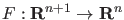. We want to compute a solution
curve of the equation  . Numerical continuation is a technique to compute a consecutive
sequence of points which approximate the desired branch. Most continuation algorithms
implement a predictor-corrector method. The idea behind this method is to generate a
sequence of points
. Numerical continuation is a technique to compute a consecutive
sequence of points which approximate the desired branch. Most continuation algorithms
implement a predictor-corrector method. The idea behind this method is to generate a
sequence of points  , 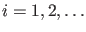 along the curve, satisfying a chosen
tolerance criterion:
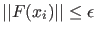 for some 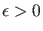 and an additional accuracy condition
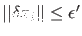 where 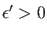 and 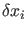 is the last Newton correction.
, 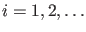 along the curve, satisfying a chosen
tolerance criterion:
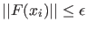 for some 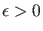 and an additional accuracy condition
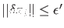 where 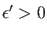 and 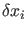 is the last Newton correction.
To show how the points are generated, suppose we have found a point  on the
curve. Also suppose we have a normalized
tangent vector
on the
curve. Also suppose we have a normalized
tangent vector  at
at  , i.e.
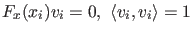.
, i.e.
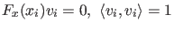.
The computation of the next point  consists of 2 steps:
consists of 2 steps: